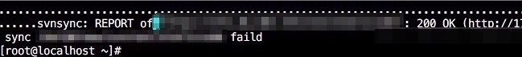
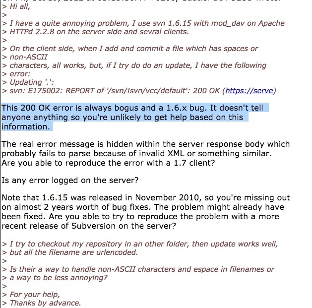
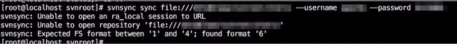
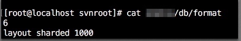
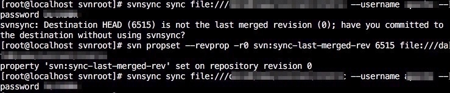

svn同步大坑
遇到的问题
这两天一直在搞svn的主从备份，使用的方法是svnsync做的主从同步，同步大部分的仓库都没有什么问题很顺利的就同步完成了，不了解svnsync同步的可以看我这篇,但是在在同步2个仓库的时候遇到了很麻烦的问题，报错如下：

这个报错诡异在我前面的创建初始化版本库都没问题，从主库同步的时候一开始也很顺利，但是同步到某一个版本时就像上图一样中断了。百度了一堆都是checkout出这个错的，让 你清缓存什么的，根本文不对题。google也是没什么解决方法，看到一个说是svn版本太低有bug，

只找到了这个解决方法，我就试试了，更新了svn版本到1.8，还是200 ok，报错和之前差不多,这个方法失效。后来在网上找了很久，发现这个链接，感觉可以试试
上面的报错我个人认为是仓库的某个版本太大导致从库向主库同步失败。绕过这个报错无非是不用工具同步，直接将主库目录拷贝到从库并修改库的属性。
解决方法
下面是具体步骤：
1、将主库复制到从库
这里使用什么方法都行，可以用hotcopy，也可以用直接将主库打包发送到从库上。我用的是直接打包的方法，建议用hotcopy，因为直接打包拷贝容易被锁
tar czvf repo.tar.gz repo
2、在从库上创建初始化仓库
在这里创建初始化仓库的目的只有一个就是为了获取它的属性。
cd /tmp
svnadmin create repo
chown -R apache:apache repo
cp -p repo/hooks/pre-revprop-change.tmpl repo/hooks/pre-revprop-change
sed -i '3,65d;s/exit 1/exit 0/g' repo/hooks/pre-revprop-change
svnsync init file:///path/to/repo http://master/path/to/repo --username apache --password xxx
上面步骤做完后从库会生成uuid，repo/db/revprops/0/0等初始化信息
3、将主库打的包解压到从库的svn目录下，并修改属性
tar xzvf repo.tar.gz #解压
cp -p /tmp/repo/hooks/pre-revprop-change repo/hooks #拷贝钩子到从库
cp -p /tmp/repo/db/uuid repo/db/uuid #替换uuid
cp -p /tmp/repo/db/revprops/0/0 repo/db/revprops/0/0 #替换初始版本日志
4、从库同步主库
svnsync sync file:///path/to/repo --username apache --password xxx
同步可能会遇到如下报错：

一开始不知道是什么鬼，后来看最后一行说我fs format应该在1到4之间，但是我的如下图：

所以我把6改成4，再次执行，又遇到如下报错：

意思是说我版本号对不上，使用
svn propset --revprop -r0 svn:sync-last-merged-rev 6515 http://master/path/to/repo同步主库的版本号，6515是你在主库打包时的版本号
在执行一次同步
svnsync sync file:///path/to/repo --username apache --password xxx
到此，svn主从同步已经完成，整个过程其实没什么难点，正常同步使用svnadmin create，init，sync三部曲即可完成，但是这里出现了特殊情况，那么就要换一种思路，先将主库整个拷贝过来，然后替换它的属性信息，让它成为从库。要替换的是uuid、pre-revprop-change和/db/revprops/0/0。